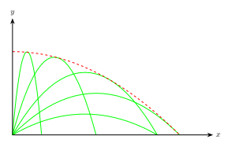
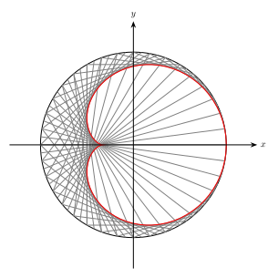
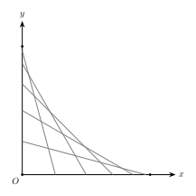
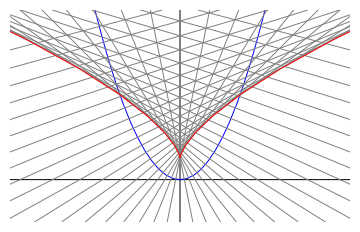

曲线族包络线问题的通解
序
笔者在近二十余年来遇到了一些求包络线的问题, 每个问题都可以用完全不同的思路解, 同时也存在通用的解法, 在此记录.
定速抛体
一个喷泉有一个小的半球形喷嘴, 位于水池中水的表面. 喷嘴上由很多均匀分布的小洞, 通过这些小洞, 水以相同的速度向不同的方向喷出. 求喷泉形成的水钟的形状.

设水的初速度为 $v_0$, 与地面夹角为 $\theta$, 重力加速度为 $g$. 其轨迹的参数方程为: $$ \begin{align*} x &= v_0\cos\theta\cdot t \tag{1}\\ y &= v_0\sin\theta\cdot t - \frac{1}{2}gt^2 \tag{2} \end{align*} $$ 将 (1) 式代入 (2) 式可得轨迹的标准方程为: $$ y = \tan\theta\cdot x - \frac{g}{2v_0^2\cos^2\theta}\cdot x^2 $$
给定 $x_0$, 遍历所有的 $\theta$, 找到最大的 $y_0$, 则 $(x_0,y_0)$ 就是包络线上的点, 即: $$ y_0 = \mathop{\max}_{\theta}\left\{ \tan\theta\cdot x_0 - \frac{g}{2v_0^2\cos^2\theta}\cdot x_0^2 \right\} . $$ 令 $\dfrac{\mathrm{d}y}{\mathrm{d}\theta} = 0$, 解得 $\tan\theta = \dfrac{v_0^2}{gx_0}$. 代入求得 $y_0 = -\dfrac{gx_0^2}{2v_0^2} + \dfrac{v_0^2}{2g}$. 所以包络线方程为 $$ y = -\frac{g}{2v_0^2}\cdot x^2 + \frac{v_0^2}{2g} .$$ 是一个对称轴在 $y$ 轴上的抛物线.
令 $(x, y)$ 是包络线上一点, 则一定存在一个抛物线 $C_\theta$ 经过该点, 并且包络线和抛物线在该点处的切线相同. 根据抛物线约束关系得: $$ y = \tan\theta\cdot x - \frac{g}{2v_0^2\cos^2\theta}\cdot x^2 \tag{1} $$ 根据切线斜率关系可得 $$ \frac{\mathrm{d}y}{\mathrm{d}x} = \tan\theta - \frac{gx}{v_0^2\cos^2\theta} \tag{2} $$
对 (1) 式求全微分: $$ \mathrm{d}y = \frac{x\ \mathrm{d}\theta}{\cos^2\theta} + \tan\theta\ \mathrm{d}x - \frac{gx\ \mathrm{d}x}{v_0^2\cos^2\theta} - \frac{gx^2\tan\theta\ \mathrm{d}\theta}{v_0^2\cos^2\theta} \tag{3} $$ 将 (2) 式代入 (3) 式可得 $$ x = \frac{v_0^2}{g\tan\theta} ,$$ 再将这个结果代入 (1) 式, 消去 $\theta$, 可得包络线得标准方程为: $$ y = \frac{v_0^2}{2g} - \frac{g}{2v_0^2} \cdot x^2 $$
心脏线
圆周上均匀分布了 $N$ 个点, 连接第 1 个点与第 2 个点, 第 2 个点与第 4 个点, …, 第 $k$ 个点与第 $2k$ 个点, 等等. 求与这些弦均相切的曲线方程.

设某条弦 $l_{\alpha}$ 的两端点为 $(\cos\alpha,\sin\alpha)$ 和 $(\cos 2\alpha, \sin 2\alpha)$. 这条弦对应的直线方程为 $$ x(\sin 2\alpha - \sin\alpha) - y(\cos 2\alpha - \cos\alpha) = \sin\alpha ,$$ 应用和差化积得到 $$ x\cdot\cos\frac{3}{2}\alpha + y\cdot\sin\frac{3}{2}\alpha = \cos\frac{1}{2}\alpha \tag{5} $$ 与它相邻的弦 $l_{\beta}$ 的两端点为 $(\cos\beta,\sin\beta)$ 和 $(\cos 2\beta, \sin 2\beta)$, 对应的直线方程为 $$ x\cdot\cos\frac{3}{2}\beta + y\cdot\sin\frac{3}{2}\beta = \cos\frac{1}{2}\beta \tag{6} $$ 这里 $\beta - \alpha = \Delta\alpha \to 0$.
两条弦的交点就是包络线上的点. 联立 (5), (6) 两式, 可解出交点的坐标为 $$ \begin{align*} x&= \left( \sin\frac{3}{2}\beta\cos\frac{1}{2}\alpha - \sin\frac{3}{2}\alpha\cos\frac{1}{2}\beta \right)\cdot\mathrm{det}^{-1} \\ y&= \left( -\cos\frac{3}{2}\beta\cos\frac{1}{2}\alpha + \cos\frac{3}{2}\alpha\cos\frac{1}{2}\beta \right)\cdot\mathrm{det}^{-1} \end{align*} $$ 其中 $$\mathrm{det} = \cos\frac{3}{2}\alpha\cdot\sin\frac{3}{2}\beta - \cos\frac{3}{2}\beta\cdot\sin\frac{3}{2}\alpha = \sin\frac{3(\beta-\alpha)}{2} = \sin\frac{3\Delta\alpha}{2} .$$ 将 $\beta = \alpha + \Delta\alpha$ 代入交点坐标的表达式, 展开, 并用等价无穷小替换, 可得 $$ \begin{align*} x &= \frac{1}{3}\cos 2\alpha + \frac{2}{3}\cos\alpha \\ y &= \frac{1}{3}\sin 2\alpha + \frac{2}{3}\sin\alpha \end{align*} $$
墙角滑倒的棍子
一根棍子靠在垂直于地面的墙上, 一端在地面上沿直线向外滑动, 另一端始终贴着墙向下滑动, 求棍子运动轨迹构成的形状.

设棍子长为 $1$, 与地面夹角为 $\theta$, 那么棍子两端点坐标为 $(0,\sin\theta)$ 和 $(\cos\theta,0)$, 对应的直线方程为 $$ \frac{x}{\cos\theta} + \frac{y}{\sin\theta} = 1 .$$ 或写成 $$ y = \sin\theta - \tan\theta\cdot x .$$ 其中 $\theta\in[0,\dfrac{\pi}{2}]$. 对于给定的 $x_0$, 遍历所有的 $\theta$, 找到最大的 $y_0$, 则 $(x_0, y_0)$ 就是包络线上的点: $$ y_0 = \mathop{\max}_{\theta}\left\{ \sin\theta - \tan\theta\cdot x_0 \right\} $$
容易求出当 $\cos^3\theta = x_0$ 时, $y'(\theta) = 0$, $y''(\theta) < 0$, 上式取得最大值. 此时 $$ y_0 = \sin\theta - \tan\theta\cdot\cos^3\theta = \sin^3\theta.$$
于是可得包络线的参数方程: $$ x = \cos^3\theta, \qquad y = \sin^3\theta .$$ 或者写成 $$x^{\frac{2}{3}} + y^{\frac{2}{3}} = 1.$$
抛物线的法线
过抛物线 $y = x^2$ 上每一点作法线, 求与这些法线都相切的曲线方程.

通解
假设有一族曲线 $F(x,y,t)=0$, 其中 $t$ 为参数, 如何求与这一族曲线都相切的曲线方程.
考虑曲线族的其中两条曲线 $F(x,y,t)=0$ 和 $F(x,y,t+\Delta t)=0$. 联立这两个曲线方程, 求出它们的交点: $$ \begin{align*} F(x,y,t) &= 0 \tag{1} \\ F(x,y,t+\Delta t) &= 0 \tag{2} \end{align*} $$ 当 $\Delta t\to 0$ 时, $$ F(x,y,t+\Delta t) = F(x,y,t) + F'_t(x,y,t)\Delta t \tag{3} $$ 代入 (2), 并根据 (1) 得 $$ F'_t(x,y,t) = 0 \tag{4} $$ 再联立 (1), (4) 两个方程可以解出交点坐标 $(X_t, Y_t)$.
既然 $(X_t, Y_t)$ 位于曲线 $F(x,y,t)=0$ 上, 那么可以求出该点处切线斜率. 固定 $t$, 变化 $x,y$, 使 $(X_t+\Delta x, Y_t + \Delta y)$ 仍然位于 $F(x,y,t)=0$ 上, 令 $\Delta x, \Delta y\to 0$, 则 $$ F(X_t,Y_t,t) + F'_x(X_t,Y_t,t)\Delta x + F'_y(X_t,Y_t,t)\Delta y = 0 .$$ 将 $F(X_t,Y_t,t)=0$ 代入, 得切线斜率为 $$ \frac{\Delta y}{\Delta x} = -\frac{ F'_x(X_t,Y_t,t)}{ F'_y(X_t,Y_t,t)} \tag{5}$$
另一方面, 当 $t$ 变化时, 交点坐标 $(X_t, Y_t)$ 也构成一条曲线. 当 $t$ 变化到 $t+\Delta t$ 时, $(X_t, Y_t)$ 的变化量为 $$ \Delta X_t = X_{t+\Delta t} - X_t, \qquad \Delta Y_t =Y_{t+\Delta t} - Y_t .$$ $(X_t+\Delta X_t, Y_t+\Delta Y_t)$ 同样满足方程 (1): $$ F(X_t+\Delta X_t, Y_t+\Delta Y_t, t+\Delta t) = 0 \tag{6} $$ 再令 $\Delta t \to 0$, 有 $\Delta X_t, \Delta Y_t\to 0$, 再根据 $F(X_t,Y_t,t)=0$ 可得 $$ F'_x(X_t, Y_t, t) \Delta X_t + F'_y(X_t, Y_t, t) \Delta Y_t + F'_t(X_t, Y_t, t)\Delta t = 0.$$ 而 $(X_t,Y_t)$ 同时也满足 (4), 于是 $$\frac{\Delta Y_t}{\Delta X_t} = -\frac{ F'_x(X_t,Y_t,t)}{ F'_y(X_t,Y_t,t)} \tag{7} $$
可见参数为 $t$ 的曲线 $(X_t, Y_t)$ 的切线斜率与 $F(x,y,t)=0$ 在 $(X_t, Y_t)$ 处的切线斜率一样, 故它们相切. 因此所求的曲线方程就是对于不同的参数 $t$ 满足 (1) 和 (4) 的点构成的曲线.
特别地, 若曲线族 $F(x,y,t)=0$ 具有 $y=f(x,t)$ 的形式, 则 $F(x,y,t)=f(x,t)-y$, 根据 $$ F'_t(x,y,t) = f'_t(x,t) = 0 $$ 可直接解出 $x$ 与 $t$ 的关系, 进而再根据 (1) 可以求出 $y$ 与 $t$ 的关系.